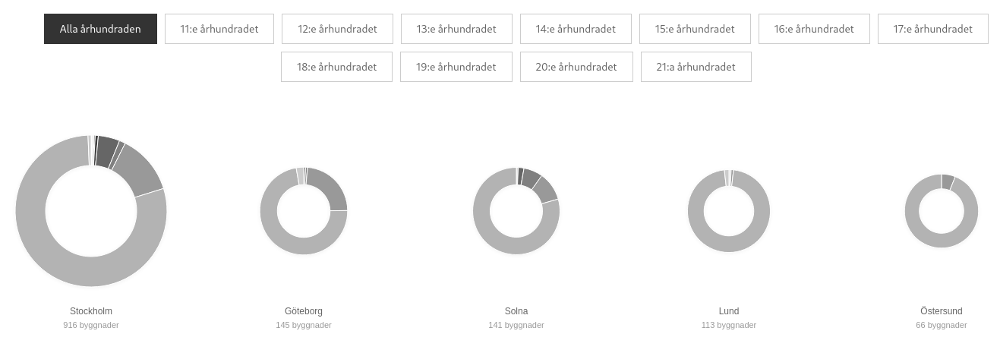
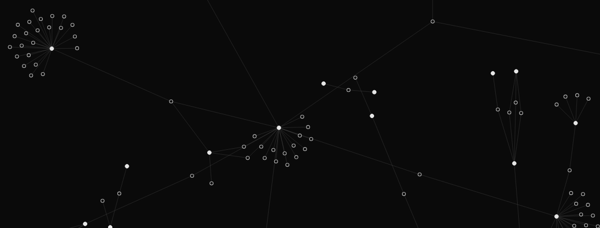
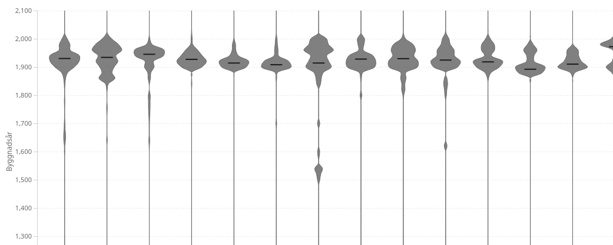
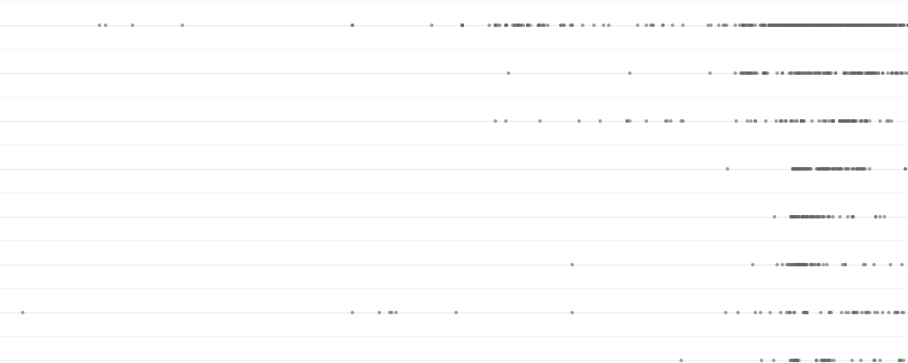
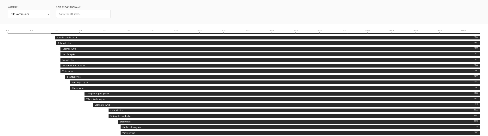

Visualiseringar för Ett nätverk av platser
Jag fick under hösten 2025 nöjet att arbeta på en serie visualiseringar för att illustrera de värden och data som ArkDes, Riksantikvarieämbetet, Nationalmuseum, Tekniska museet och Wikimedia Sverige tillsammants jobbat med i projektet "Ett nätverk av platser ".
Relaterade länkar
Byggnader per kommun och århundrade
 UtforskaByggnader och arkitekter
 UtforskaKartor
 Utforska
Utforska
Fioldiagram kommuner
 UtforskaTidslinjer kommuner
 UtforskaByggnader vattenfall
 UtforskaByggnadskalender
 Utforska
Utforska